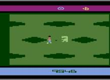
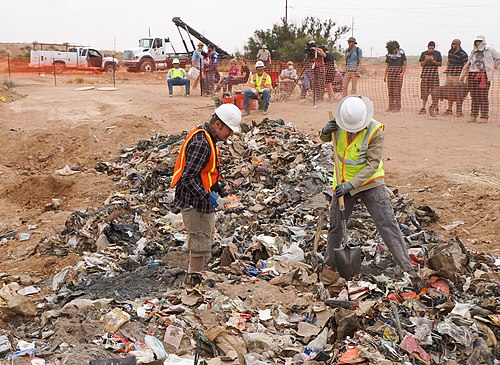
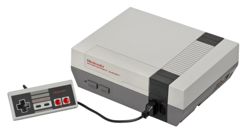
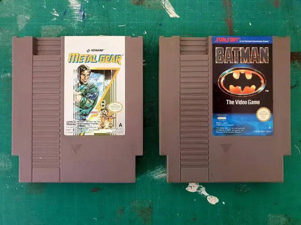

Les années 1980 ont marqué l'essor des consoles de maison. Plusieurs compagnies qui faisaient des bornes d'arcades ont décidé de s'étendre sur ce marché en plein développement, créant ainsi une nouvelle ère pour le jeu vidéo domestique.
Malheureusement, les années 80 ont débuté avec un évènement tragique : le krach du jeu vidéo de 1983. Cet évènement fut causé par la sortie d'une multitude de jeux, consoles et bornes d'arcades de qualité très basse.
Cette période vit une baisse de confiance drastique des consommateurs envers le secteur. L'étincelle qui mit le feu aux poudres fut le jeu "E.T. l'extra-terrestre" sur Atari 2600. À cause du nombre absurde de cartouches invendues, elles furent enterrées au Nouveau-Mexique, et cette catastrophe faillit mener Atari à la faillite.

Visuel du jeu E.T. sur Atari 2600

Excavation des cartouches de E.T. et d'autres cartouches d'Atari au Nouveau-Mexique
Heureusement, l'avènement de la NES (Nintendo Entertainment System) et du premier Super Mario par Nintendo en 1984, ainsi que leurs succès internationaux, ont pu sauver le secteur de la faillite totale.

La NES et Super Mario - Les sauveurs de l'industrie du jeu vidéo
Ce qui a différencié Nintendo de ses compétiteurs est le contrôle qu'avait la marque sur les jeux sortis sur leurs consoles. Avec le fameux "Seal of Quality" qu'ils mettaient sur leurs jeux, Nintendo démontrait qu'ils avaient sélectionné des jeux de qualité, et n'avaient pas simplement laissé la licence de développement sur leurs consoles à n'importe qui, surtout dans cette période post-krach.

Le fameux "Seal of Quality" de Nintendo - Garantie de qualité
La stratégie de Nintendo a non seulement sauvé l'industrie du jeu vidéo, mais a aussi établi des standards de qualité qui influenceront toute l'industrie pour les décennies à venir. Le contrôle qualité strict et le "Seal of Quality" deviendront des modèles pour les générations suivantes de consoles.
Les années 80 ont vu le jeu vidéo passer des salles d'arcade aux salons familiaux, démocratisant ainsi l'accès au divertissement vidéoludique.
Le krach de 1983 a enseigné à l'industrie l'importance de la qualité et de la confiance des consommateurs, des leçons qui restent pertinentes aujourd'hui.
L'introduction du "Seal of Quality" et du contrôle des licences a créé un nouveau modèle économique pour l'industrie du jeu vidéo.